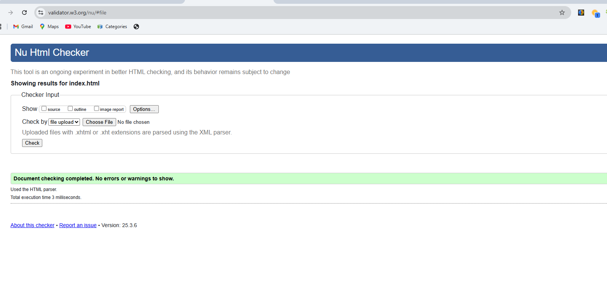
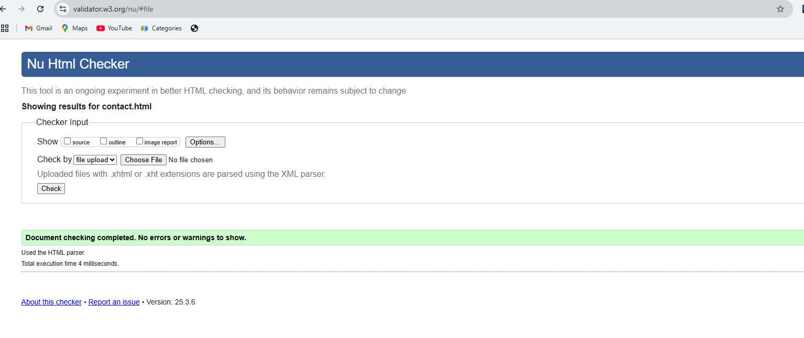
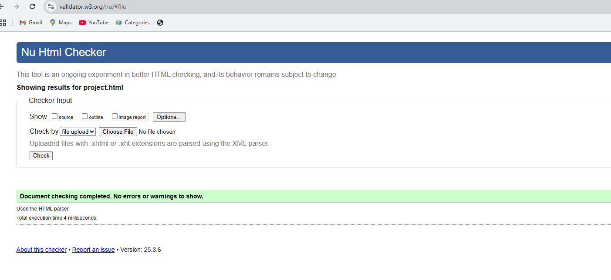
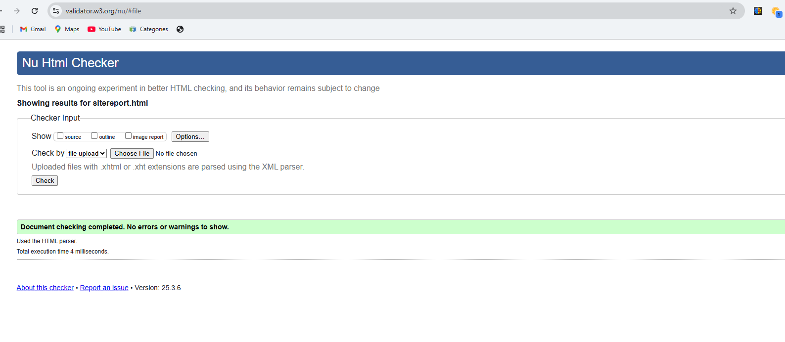
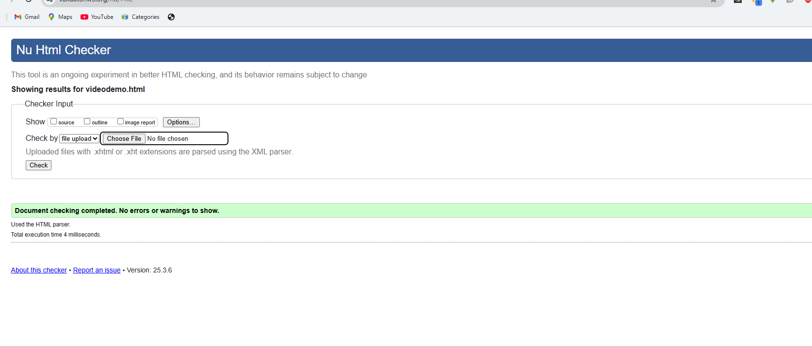
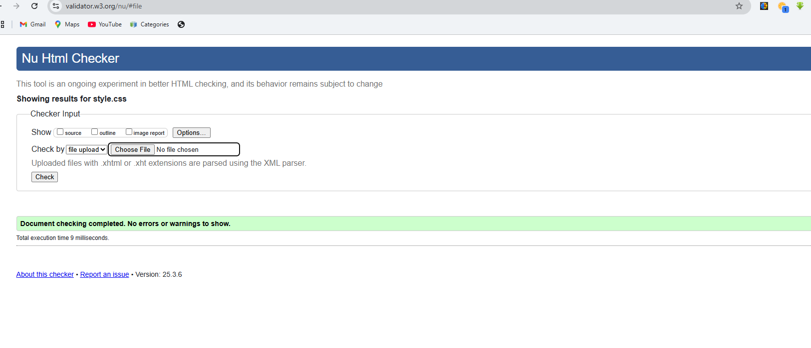

Site Development Report
Learning Experience
My journey into web development through this module has been both challenging and rewarding. As a computer science student at the University of Northampton, this was my first serious attempt at creating a complete website from scratch. The learning curve was steep, but each challenge helped me grow as a developer.
Initially, I struggled with CSS layouts and responsive design. The concept of flexbox and grid systems seemed complex at first, but through consistent practice and referring to resources like CSS-Tricks and MDN Web Docs, I gradually became more comfortable with these concepts.
"One of my biggest achievements was implementing a fully responsive navigation menu that transforms into a hamburger menu on mobile devices - something I initially thought was impossible without JavaScript!"
Development Process
I approached the development in several phases:
- Planning Phase (Week 1-2): Researched portfolio websites, created wireframes, and planned the content structure
- Initial Development (Week 3-4): Set up the basic HTML structure and implemented the core CSS styling
- Responsive Design (Week 5-6): Adapted the layout for different screen sizes and implemented the mobile menu
- Testing & Refinement (Week 7-8): Conducted cross-browser testing and fixed various bugs
Design Decisions
The design choices were influenced by modern portfolio websites and material design principles:
- Color Scheme: I chose a professional color palette with #2c3e50 (dark blue) and #3498db (light blue) as primary colors. These colors were inspired by the University of Northampton's brand colors and create a professional, academic feel.
- Typography: I selected 'Segoe UI' as the primary font for its excellent readability and modern appearance. The font stack includes fallbacks ensuring consistent display across different operating systems.
- Layout: The clean, minimalist layout was inspired by websites like Awwwards and Dribbble.
Challenges and Solutions
The biggest challenges I faced included:
- Creating a responsive navigation menu without JavaScript
- Maintaining consistent spacing and alignment across different screen sizes
- Ensuring proper contrast ratios for accessibility
- Debugging cross-browser compatibility issues, especially with Firefox
Validation Results
HTML Validation:
    CSS Validation:
Video Demonstration
A complete video walkthrough of the website and its features can be found here: Portfolio Website Demo
Future Improvements
While I'm proud of what I've achieved, there are several areas I'd like to improve in the future:
- Implement dark mode functionality
- Add more interactive elements using JavaScript
- Improve page load performance
- Add more project examples as I complete them